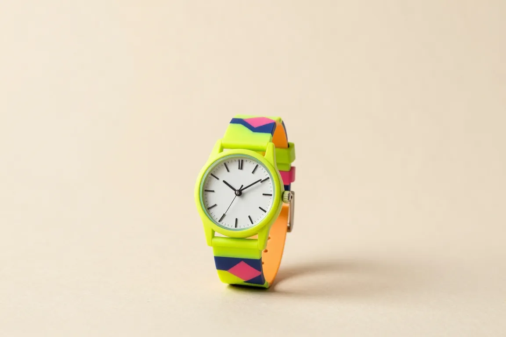

fashion · 1983–1999 · also: Plastic fashion watch, Swatch style, Fashion watch of the 1980s
A cheap Swiss quartz watch in a plastic case with a bright pattern. The maker sells it as an accessory and changes it each season. The Swatch line of 1983 set it.

Core thesis
A watch can be a fashion accessory that one wears for a season. The maker sells colour and a pattern at a price that allows many watches.
Design principles
Mould the case from plastic in one piece with the strap lugs, so that it needs few parts.
Limit the number of parts to about 51, with a quartz module that the maker welds into the case.
Print a bold pattern in two to four colours on the dial, the strap or the case.
Release two collections each year, so that the buyer returns each season.
Make the dial large and flat with simple hands, so that the time is clear.
Make the strap from the same plastic as the case, in a vivid colour.
Price each watch at the level of a pair of shoes, so that one can own many.
Invite artists and designers to draw the face for limited editions.